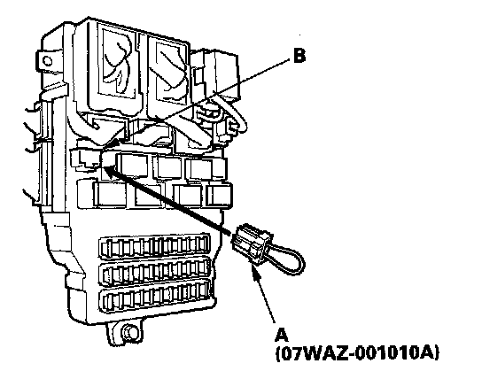
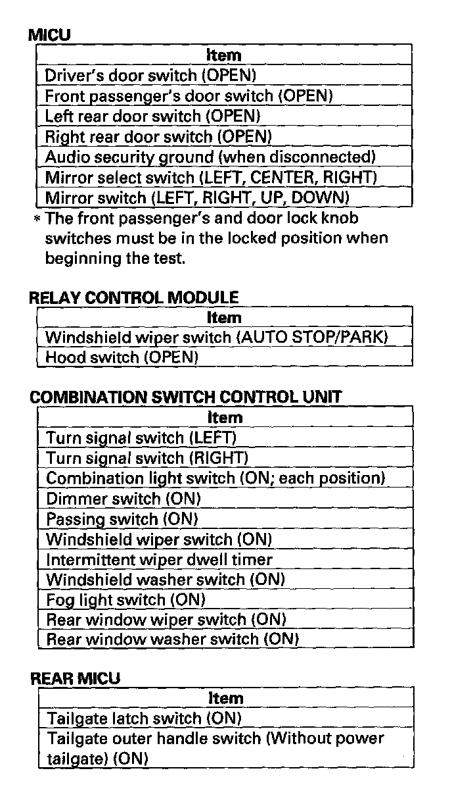
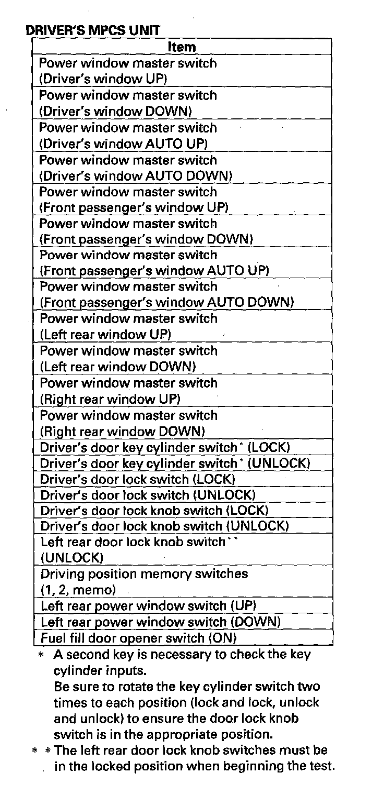
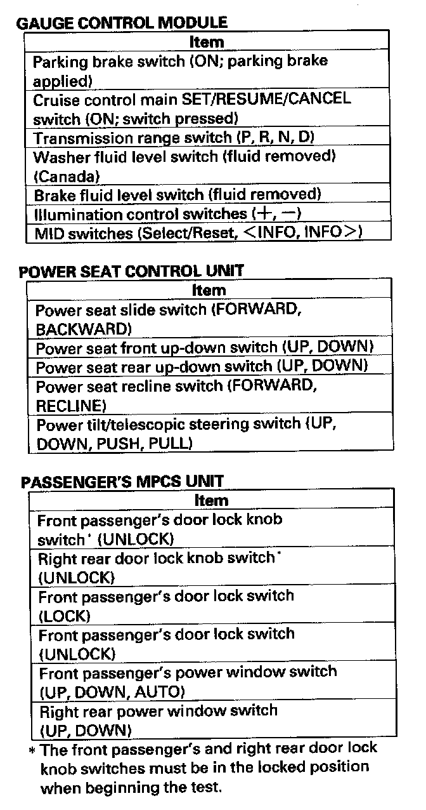

Troubleshooting - B-CAN System Diagnosis Test Mode 1 and 2 (Without the HDS)
Troubleshooting - B-CAN System Diagnosis Test Mode 1 and Test Mode 2 (without the HDS)Special Tools Required
MPCS (MCIC) service connector 07WAZ-001010A
Test Mode 1
Check the PCM for DTCs and troubleshoot PCM or F-CAN loss of communication errors first, then perform this diagnosis if the HDS is not available.
1. Check the No. 7 (10 A) and No. 21 (7.5 A) fuses in the under-dash fuse/relay box.
Are the fuses OK?
YES - Go to step 2.
NO - Find and repair the cause of the blown fuse.
2. Remove the left kick panel.
3. Turn the ignition switch ON (II), and move the ceiling light switch to the middle (door) position.

4. Connect the MPCS service connector (A) to the MCIC socket (B) in the under-dash fuse/relay box.
5. Wait 5 seconds, and watch the ceiling lights. When the ceiling lights flash quickly once, and then go off, the system is in Test Mode 1.
6. Check for B-CAN DTCs indicated by the gauge control module LCD display while still in Test Mode 1. Push the odometer select/reset button to display the next code. After you get to the last code, the display shows END. If no DTCs are stored, the display will read NO.
Are any DTCs indicated?
YES - Go to Step 7.
NO - Go to Step 10.
7. Record all DTCs and sort them.
8. Troubleshoot the DTCs in this order:
- Battery voltage DTCs
- Internal error DTCs
- Loss of communication DTCs (begin with the lowest number first; for example, if B1008 and B1011 are retrieved, troubleshoot B1008 first).
Refer to less of communication DTC cross reference chart.
- Signal error DTCs
9. Clear the DTCs by pressing and holding the select/reset button for about 10 seconds. You will hear a beep to confirm the codes have been cleared. Operate the devices that failed, and recheck for codes.
Test Mode 2
10. Remove the MPCS service connector from the under-dash fuse/relay box socket for 5 - 10 seconds, then re-insert it to enter Mode 2. When the system enters Mode 2, the ceiling light will flash two times quickly and then go off.
NOTE: If the MPCS connector is disconnected for too short or too long of a time, or the ignition switch is turned OFF, the system will return to Test Mode 1.



11. The given tables list the circuits that can be checked in Test Mode 2. Operate the switch that is most closely related to the problem. If the circuit is OK, the ceiling lights will blink once. If the circuit is faulty, there will be no indication.
Do the map lights indicate proper switch operation?
YES - Go to function and input test for the system related to the failure.
NO - Repair the open, short, or replace the faulty switch.